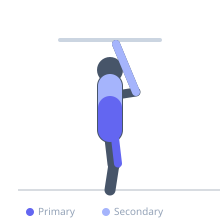

Exercise guide / Hanging Knee Raise
Hanging Knee Raise
The hanging knee raise is a beginner-to-intermediate hanging core exercise in which the athlete draws both knees toward the chest while hanging from a bar. By reducing the lever arm compared to straight-leg variations, it makes hip flexor and rectus abdominis training accessible to those building toward hanging leg raises and toes-to-bar. Proper posterior pelvic tilt during the top of the movement ensures abdominal engagement beyond mere hip flexion.
Primary muscles
iliacus
psoas major
rectus abdominis
Secondary muscles
latissimus dorsi
flexor carpi radialis
Stabilizers
trapezius upper
external oblique
Equipment
Pull-Up Bar (Doorframe)
Optional
Pull-Up Bar (Freestanding Tower)


Starting position
- Hang from a pull-up bar with an overhand grip at shoulder-width. Arms fully extended, body still.
Setup
- Use a secure overhead bar. Strive for a stable dead hang before initiating the movement.
Steps
- Step 1: Begin in a stable dead hang with arms fully extended.
- Step 2: Brace the core and draw both knees upward toward the chest.
- Step 3: At the top, tuck the pelvis posteriorly and compress the abs to ensure the rectus abdominis is loaded.
- Step 4: Lower the knees with control back to the starting position.
- Step 5: Avoid swinging at the bottom — pause briefly in dead hang before the next repetition.
Coaching cues
- Pull your knees into your belly
- Round the lower back at the top — don't just lift legs
- Pause at the bottom — no swinging
Breathing
- Exhale as the knees rise. Inhale on the controlled descent.
Range of motion
- Knees should rise to at least hip height; ideally toward the chest for maximum abdominal involvement.
Tempo
- 2-0-2: 2 seconds concentric, 2 seconds eccentric. Eliminate momentum.
Common mistakes
- Swinging the body to generate momentum rather than using core strength
- Dropping the knees too fast — the eccentric phase should be controlled
- Failing to posteriorly tilt the pelvis at the top, leaving the movement as pure hip flexion
Safety
- Grip strength limits many beginners — use chalk or straps if needed.
- Avoid swinging as it places uneven load on the shoulder joints.
Training
- strength: 8–15 reps
- endurance: 15–25 reps
- strength: 3–4 sets
- endurance: 3–4 sets
- Rest: {'strength': 90, 'endurance': 60}